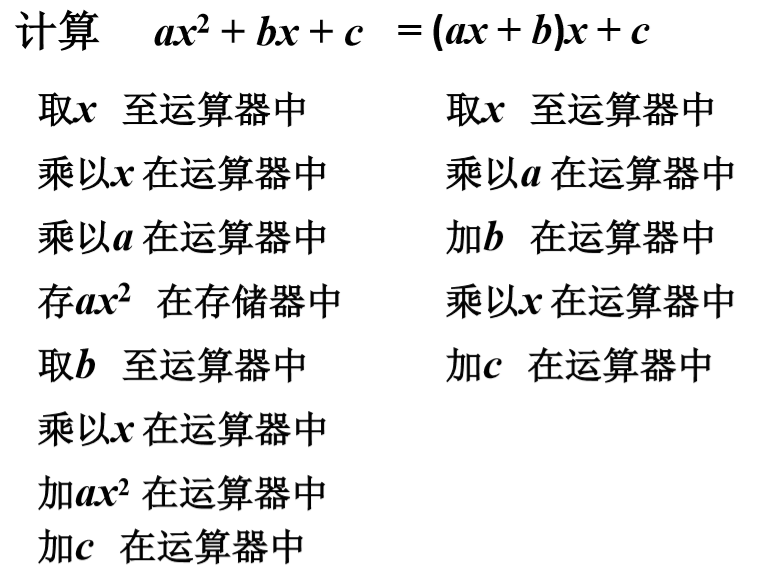
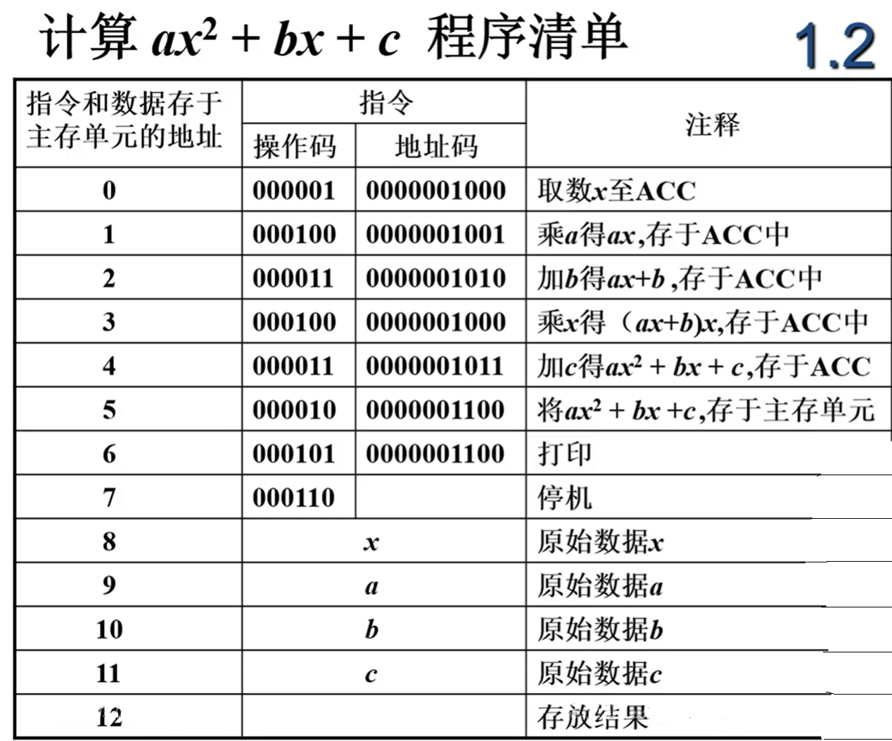
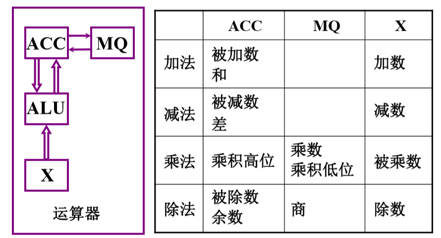
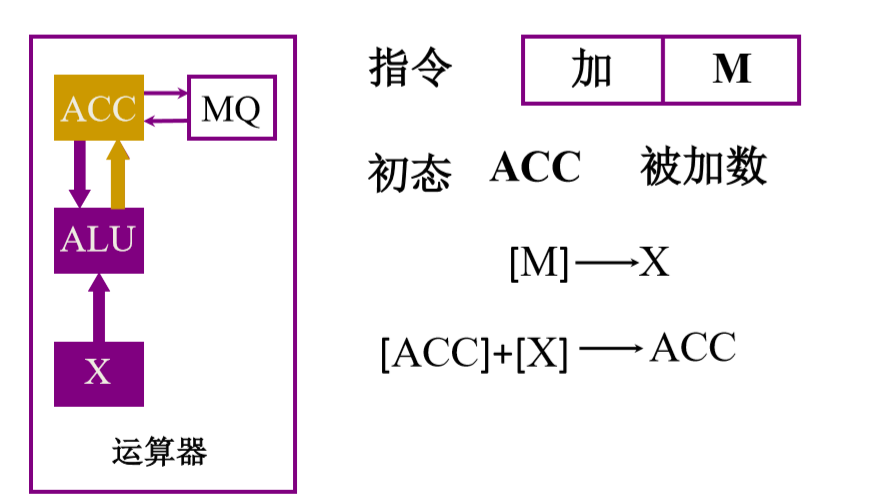
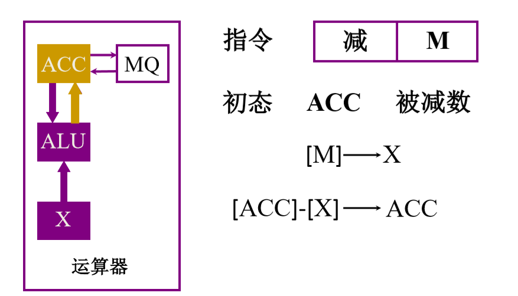
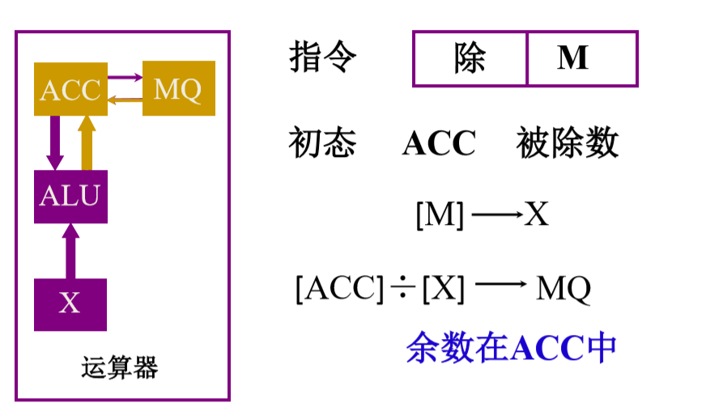
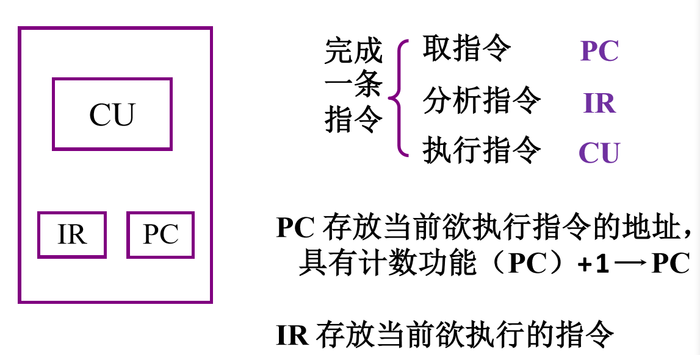
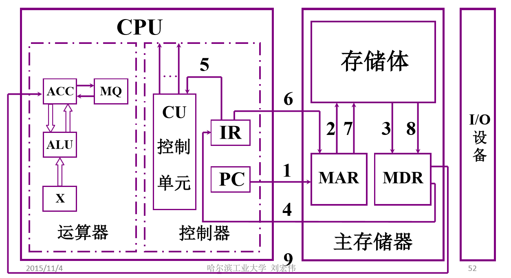
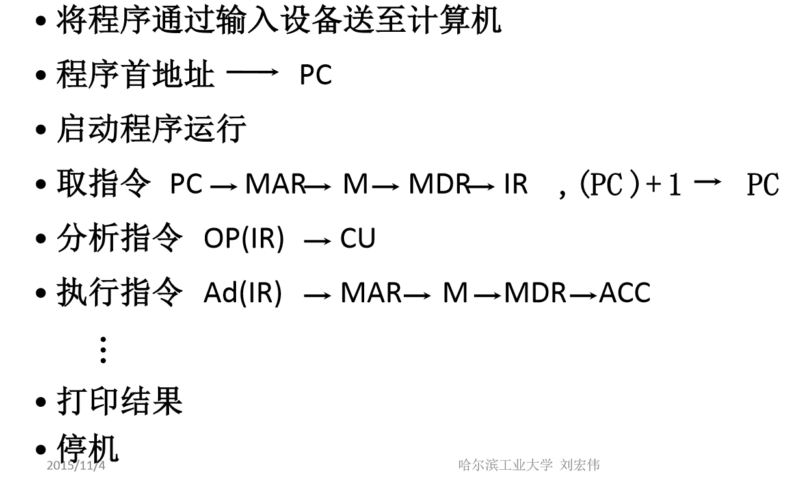

计组原理概述 链接到标题
如何使用计算机解决数学问题 链接到标题
- 建立数学模型
- 确定计算方法
- 编制解题程序
编程举例 链接到标题

程序清单 链接到标题

存储器的基本组成 链接到标题
- 存储体 - 存储单元 - 存储元件（1/0）
- 大楼 - 房间 - 床位 （无人/有人）
- 存储单元：存放一串二进制代码，每一个存储单元赋予一个地址
- 存储子： 存储单元中二进制代码的组合
- 存储字长： 存储单元中二进制代码的位数
- MAR ： 存储器地址寄存器，反应存储单元的个数
- MDR ： 存储器数据寄存器，反应存储字长
假设存储体为一个长方体，长方体的底面积为容纳的存储器地址，长方体的高为每一个存储器地址内的数据位，设 MAR=4bit，MDR=8bit，存储单元个数为 16，存储字长为 8.
运算器的基本组成及操作过程 链接到标题

加法操作过程 链接到标题

初态 ACC 已经保存了被加数，指令 M 给出加数在内存单元的地址，将加数从内存单元中取出，然后保存进寄存器 X 中，ALU 将寄存器 ACC 与 X 中的数据进行运算，并将结果保存进 ACC 当中。
减法操作过程 链接到标题

同样 ACC 保存了被减数，指令中给出了减数的内存地址，将减数从 M 中取出，并且存入寄存器 X 中，通过 ALU 的运算，将结果保存进 ACC 中。
乘法操作过程 链接到标题

ACC 中预先保存了被乘数，将指令中 M 地址中的乘数保存进 MQ 寄存器中，然后将 ACC 中的数据存入 X 寄存器中，由于乘法是利用累加和移位的操作实现的，所以要将 ACC 寄存器的数据清零，将 X 与 MQ 的数据进行乘法操作，并将结果的高位保存进 ACC 中，低位保存进 MQ 中。
除法操作过程 链接到标题

ACC 中保存了被除数，将 M 地址中的除数保存进 X 寄存器中，ALU 实现 ACC 与 X 相除，结果保存进 MQ 中，余数保存进 ACC 中。
控制器的基本组成 链接到标题

主机完成一条指令以取数指令为例 链接到标题

PC 将当前预执行的指令地址送入 MAR，再由 MAR 送入存储体，将该指令取出，存入 MDR，从 MDR 送入 IR 中，将 IR 中指令的操作码送入 CU，由 CU 完成操作。由 CU 控制 IR 将指令送入 MAR，由 MAR 送入存储体，告知将有一个数据存入存储体，地址是多少。下一步将 ACC 中的数据送入 MDR，由控制器的控制下将 MDR 中的数据保存进相应的地址中。
ax^2+bx+c 程序运行过程 链接到标题
